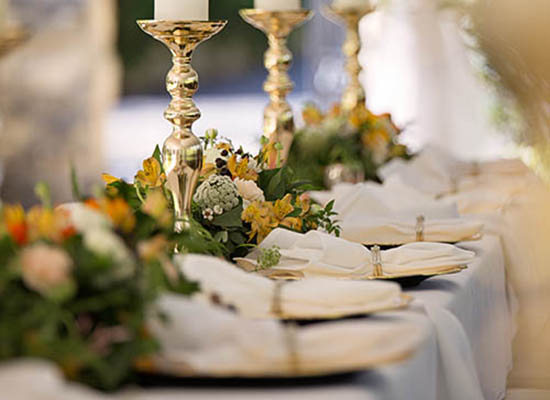

Receptions
After your temple wedding, hold your wedding reception in our beautiful Reception Hall! We provide a variety of services for your happy day, including discounts on room rates for the bride and groom before and after the wedding.
Packages and pricing available on request. Please see below for a brief summary of what we offer.
Decor
The hall is easily customized with the flowers and decor of your choice, with staff on hand to assist in setup and cleanup according to your needs. We are happy to provide:
- Tables and tablecloths
- Place settings of your choice (select from several options dependent on location)
- Pillars, vases, archways and other "large furniture" items around which to build your decor
- Contact information for local wedding vendors
Catering & Food Service
We would be delighted to cater your reception and ensure that all of your guests leave with pleasant memories and full bellies! We offer several catering options, including:
- Full dinner menu with 3 meal choices
- Light refreshment buffet with an array of appetizers
- Dessert spread with chocolate fountain or sundae bar
- Beverage station with free refills for guests (No alcohol will be served on the premises.)
- Vegan/vegetarian options on request
- Kitchen and serving area if you prefer outside catering
- Contact information for local catering services
Staging Areas
We know how important it is to capture every detail. We have set aside rooms near the Reception Hall for the bridal party and groom's party to dress, prepare and rest when needed, with comfortable seating, beautiful lighting and large mirrors. In the hall, several areas are set up with the perfect lighting for photography, whether it be your first dance together, your wedding party photos, or close-up photos of your special details. We are happy to provide contact information for our most popular local wedding photographers.
Honeymoon Suite & Room Rates
Enjoy extra-special pampering for the bride and groom in our special honeymoon suite. After your event, we give you plenty of space to relax in a plush, king-sized bed with soft sheets and plenty of pillows. Celebrate your new marriage with a complimentary bottle of sparkling cider on ice and delicious chocolates.
We are pleased to offer a discount on rooms booked in a block for weddings planned at least three months in advance. Please call to make special arrangements for your wedding party and guests.